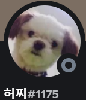

성격 방어적인데 미세한 구멍이 있는 편이다.
장점 다정하다. 이것저것 챙겨보려는 거 같은데 힘에 부치는게 보인다. 그래도 노력파. 부지런하다. 자기 의견이 확고한 편이다. 어정쩡하지 않다. 자그마한데 단단한 어른 같지만 쾅치면 무너질 것 같다.
단점 몸뚱어리가 엉망징창인 편이다. 약간 예민하고 약간 자신감 부족.
특징 효율적으로 살고 싶어하는 듯하다. 의문이나 문제에 확실한 점을 찍고 싶어하는 것 같다. 마찰이나 오류에 대한 합의점을 곧잘 찾는다. 낭비에 예민하지만 어쩌다 낭비해도 합리화를 잘 하는 편이다. 부지런하다.

눈을 마주하고 싶다.
작성자 비밀공주